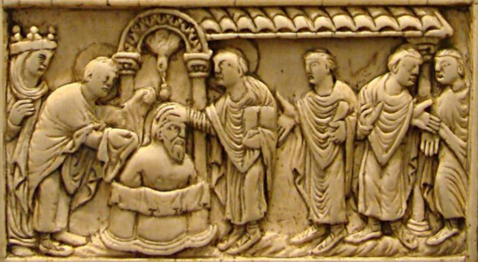
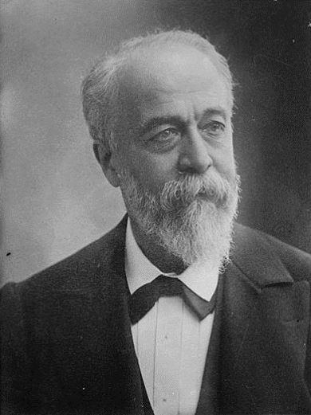

Destin Français est le dernier livre d’Éric Zemmour paru chez Albin Michel en septembre 2018. C’est un pavé de plus de 560 pages, aucune n’est de trop. Destin Français est un livre d’histoire, comme sait les écrire Éric Zemmour : une leçon de patriotisme. Car on peut, et Zemmour nous le démontre, être un penseur, un intellectuel et un fervent patriote. On ne s’ennuie jamais durant la lecture de l’ouvrage. L’auteur, à travers une série de portraits, suit une chronologie qui peut parfois paraître quelque peu hachée. Mais si, dans cet ouvrage, le passé est souvent relié au Curieusement, si l’Histoire ne se répète pas, l’Histoire de France, elle, a parfois tendance à repasser les plats. Présent ce n’est jamais sans raison.
Tout le long de l’ouvrage l’auteur emploie la même méthode pédagogique démonstrative : il présente un décor de théâtre, une image, et nous emmène ensuite visiter les coulisses de ce décor en nous en expliquant les rouages, les poulies, les cordages qui se trouvent derrière les images.
La mise en bouche est d’autant plus plaisante que dans son Introduction l’auteur parle de lui, de son passé, de son enfance dans les premiers grands ensembles d’habitation. Il nous parle de son amour quasi charnel pour la France, de son environnement familial et nous explique sa passion pour l’Histoire événementielle, il développe les raisons pour lesquelles il a opté pour le roman national et part en guerre contre les « déconstructeurs » contre ces « historiens » pour qui la France n’est un pays – s’il en est un, comme certains d’entre eux se plaisent à le dire - que depuis la Révolution française. Comme le note justement Zemmour :
« Ces historiens- là tiennent le haut du pavé. Ils ont titres et postes. Amis et soutiens. Selon la logique mafieuse, ils ont intégré les lieux de pouvoir et tiennent les manettes de l’État. » p.37.
Racontant un souvenir devant la Bérézina où son journal l’avait envoyé en reportage, l’auteur, qui est également romancier, nous rappelle son talent de conteur qui illustre ses romans dans une langue aux formules poétiques surprenantes et profondes :
« Une indolente sérénité régnait sur chacune des rives ; moi, je m’obstinais à voir et à entendre le fracas et le tumulte, les pas sourds des chevaux, les hurlements de détresse des femmes et des enfants qui se noyaient, les coups de feu, les soldats épuisés aux uniformes dépenaillés qui couraient dans le désordre, tirant au hasard, mourant par surprise. » p.11.
« Tirant au hasard, mourant par surprise.» La formule est longue en bouche, comme un vieux cru qu’on apprécie en connaisseur. D’autres beaux phrasés suivront.
Le polémiste ne manque pas d’humour ; comme on lui a souvent reproché son attachement au passé quand il dénonce les tartufferies de nos temps modernes par la formule qui le signe et avec laquelle on l’a parfois caricaturé « C’était mieux avant » il n’hésite pas à en remettre une couche avec un clin d’œil complice à ses lecteurs :
« Même sous la torture, je continuerai d’affirmer que oui, décidément, c’était mieux avant. » p.28.
Dans ses écrits antérieurs, qu’ils soient purement politiques ou issus de ses « chroniques » radiophoniques -qui curieusement ont disparu du paysage audiovisuel- l’auteur nous avait habitués à de petites incursions dans l’Histoire de France et à l’amour qu’il porte à son pays, nous ne sommes donc pas surpris des propos figurant en quatrième de couverture :
« La France coulait dans mes veines, emplissait l’air que je respirais ; je n’imaginais pas être la dernière génération à grandir ainsi. »
Le propos est fort, mais léger en regard de ce qui nous attend à l’intérieur :
[...] mais je suis convaincu qu’on ne peut être français sans être profondément imprégné du catholicisme, son culte des images, de la pompe [...] En revanche, je mets à distance ce christianisme devenu au cours de ces dernières décennies, dans la lignée de Vatican II, une folle machine à aimer l’Autre, quel qu’il soit et quelles que soient ses intentions. pp.28/29.
Gageons que beaucoup ne seront pas d’accord, mais l’indissoluble association « catholique et français toujours » a le mérite d’être énoncée et pas par n’importe quel catéchumène de province ! Illustrant une scène du film Le déclin de l’empire américain, Zemmour reporte ce que dit un professeur d’Histoire lors d’une leçon inaugurale : « Il y a trois choses importantes en Histoire. Premièrement le nombre. Deuxièmement le nombre. Troisièmement le nombre. » et Zemmour illustre aussitôt les propos de ce professeur par un constat tout simple et évident qui glace le lecteur lucide :
« Dans le monde de 1900, où la population européenne représentait quatre fois celle de l’Afrique, l’universalisme se fit conquête et colonisation de l’Afrique par l’Europe au nom de la civilisation. Dans le monde de 2100 où la population de l’Afrique représentera quatre fois celle de l’Europe, l’universalisme se fera (se fait déjà) conquête et colonisation de l’Europe par l’Afrique au nom des droits de l’homme. » p.39.
Après cette introduction riche en propos inhabituels sur l’Histoire s’ouvre la galerie de portraits allant de Clovis à de Gaulle, galerie qui s’étend en trois parties distinctes : le temps des fondations, le temps de la grandeur, le temps de la vengeance. Bien qu’habitué aux extravagances logiques de Zemmour on reste un peu surpris quand on arrive au paragraphe intitulé « Les Francs sont le nouveau peuple d’Israël », lorsqu’on lit sous la plume de l’auteur :
« Dès l’époque carolingienne, le peuple franc « est considéré comme le nouveau peuple élu ». La France est « la nation préférée de Dieu ». La France est le royaume de la nouvelle Alliance. On pioche dans l’Ancien Testament tous les signes, tous les symboles, tous les modèles. On prend le sacre, l’huile sainte, les oriflammes bleus et or, la fleur de lys, jusqu’au pouvoir de guérison. Le sacre des rois francs est inspiré de Samuel, qui, avec sa corne d’huile procède à l’onction du roi David. Par le sacre, le roi des francs, héritier des rois d’Israël, est l’élu de Dieu. » p.86.
Peut-être l’expression latine « gesta dei per francos » est un écho illustrant l’Histoire de la France, quoiqu’il en soit, cette extravagance zemmourienne, qu’on la réfute ou pas, se construit sur une certaine résonnance, une analogie plus traditionnelle que rationnelle.
Dans l’importante liste des portraits dessinés par l’historien, on est parfois surpris de trouver des poètes, des écrivains, alors que des hommes politiques que l’on attendait (Fouché, Napoléon III) font défaut dans la galerie. Le portait de Racine y siège en bonne place et l’histoire de Titus et Bérénice est disséquée et analysée avec finesse. À la page 192 dans le chapitre intitulé Racine, soft power, c’est à un véritable cours de littérature que se livre Éric Zemmour. Son admiration pour Racine est inconditionnelle, sans bornes :
« Lire et comprendre et aimer et s’imprégner de la langue de Racine, c’est lire et comprendre et aimer et s’imprégner de la France ; c’est devenir un français de toujours et l’être à jamais.[...]La France c’est Racine » p.200.
Certes nous savions que la France a des racines et Racine en fait certainement partie...
Les guerres de religions et les minorités actives occupent une bonne place dans l’ouvrage. Le siège de La Rochelle et le mouvement protestant sont analysés avec soin et d’une façon qui ne plaira certes pas à tout le monde. Si Racine, dans sa préface de Bérénice écrivait que la première règle de la tragédie est de plaire il n’en va pas de même pour l’historien. La France, pays de l’uniformité, tout au long de son histoire -et particulièrement depuis la Révolution- a été traversée par des diversités de pensées, apparentes ou pas, et souvent revendicatives. Aucune de ces composantes n’est laissée de côté. Tout un chapitre intitulé « Rothschild. Vous êtes juif, Jacob ? »( p.377) est consacré à l’influence juive au sein de la nation et de l’Europe.
 Henri BRISSON (1835-1912)Zemmour fait de l’Histoire sans scotomisation :
« Le 22 juin 1899, à la tribune de l’Assemblée nationale, Henri Brisson croise soudain les doigts vers l’avant, renverse son corps à l’arrière et lance un « À moi les enfants de la veuve ! ». Cette posture et ce cri, signe de détresse maçonnique rallieront in extrémis les députés francs-maçons présents en séance et sauveront le ministère Waldeck-Rousseau. » p.406
De l’indiscrétion politique, facile à trouver dans les annales de l’Assemblée Nationale, à l’anecdote ministérielle des passe-droits offerts par la Franc-maçonnerie, Zemmour nous instruit des mœurs particulières de la Troisième République :
« Celui-ci s’ouvre aisément les bureaux des administrations, les couloirs des assemblées et des ministères. Ses liens avec la loge maçonnique Alsace-Lorraine –dont il est un des dignitaires éminents- sont un sésame pour forcer les portes des cénacles républicains. p.424.
Eiffel a eu vent d’un projet concurrent ; une sorte de phare qui éclairerait la Ville lumière. Mais ce rival n’a pas de chance : la réglementation officielle, prise pour l’occasion par l’Administration en 1886, interdit tout édifice qui ne serait pas en fer, n’aurait pas quatre pieds à base carrée, chacun de cent vingt-cinq mètres de côté. Hasard et nécessité, Gustave Eiffel est un grand ami du nouveau ministre de l’Industrie et du Commerce, Édouard Lockroy. Le concours pour une tour Eiffel sera donc remporté à la surprise générale... par la tour Eiffel !» p.425.
Comme il n’avait pas l’intention d’écrire une histoire de France parallèle, du genre « la France maçonnique » Zemmour ne s’étend pas davantage sur l’influence des Francs-maçons sous la Troisième République et nous fait grâce de l’affaire des fiches et de dizaines d’autres scandales ayant pour toile de fond la franc-maçonnerie. Au reste il était d’une banalité à l’époque pour les hommes politiques d’être radical socialiste et franc-maçon, qui d’ailleurs ne furent pas tous malhonnêtes...
Après avoir cité quelques historiens intègres qui remettent les pendules à l’heure et écrivent que la France a payé rubis sur l’ongle ses dettes de guerre à l’Allemagne en 1815 et en 1870, Zemmour lève le voile sur ces images traumatisantes de citoyens allemands allant faire leurs courses avec des brouettes entières de billets de banque suite à une inflation colossale :
« On était loin de la paix carthaginoise. D’autant plus que les Allemands, soutenus par leurs parrains anglo-saxons, rechignèrent à régler ce qu’ils devaient. Devant la mauvaise volonté de Berlin, Poincaré, successeur de son « ennemi » Clémenceau, décida d’envoyer l’armée française occuper la Ruhr, le 11 janvier 1923. Le gouvernement allemand appela à la grève générale, payée sur deniers publics ; ce qui provoqua l’hyperinflation (les fameuses brouettes de billets pour acheter son pain) qui obsède encore l’inconscient allemand. » p.466
Zemmour, mais il n’est pas le premier, souligne combien l’entre deux guerres et la deuxième guerre mondiale ne furent que la continuation de la première. Effectivement si nous avons gagné la guerre, nous avons perdu la paix. Comme par le passé, dans ses précédents ouvrages Zemmour s’était aventuré à la case interdite de l’Histoire de France et avait osé arroser les feuilles de chêne du képi du Maréchal Pétain, il y revient courageusement, il fait de l’Histoire sans faire d’histoires, sans trous de mémoire :
« Mais tout le monde ignore ou veut ignorer que la première rafle du Vél’d’Hiv fut exécutée par le gouvernement de Paul Reynaud, à partir du 15 mai 1940 : cinq mille femmes allemandes, juives, qui seront conduites au camp de Gurs.
Auparavant les décrets-loi du 12 novembre 1938 et du 18 novembre 1939, pris par le gouvernement Daladier, avaient provoqué l’internement dans des camps de juifs étrangers, surtout des Allemands et des Autrichiens, que Serge Klarsfeld évalue à dix-sept mille. » p.529
Plus personne ne conteste que le fameux Appel du 18 juin ne fut entendu que par quelques centaines de personnes et que de Gaulle, en 1940 n’était rien en France :
« Lorsque de Gaulle envoie en France ses tous premiers émissaires, en 1940, Rémy, Fourcaud et Duclos, ils seront hébergés par des proches du Maréchal comme Gabriel Jeantet .» p.511
Le portrait croisé entre de Gaulle et Pétain est un grand morceau de l’ouvrage, une analyse psychologique ultrafine. L’orgueil qui commandait les deux hommes est parfaitement saisi et disséqué par l’auteur. Ce chapitre à lui tout seul vaut la lecture. Jeu de billard, jeu par la bande, jeu d’esbroufe, jeu de finesse, de médiocrité et de mensonges ou parfois perce la vérité :
« Le 12 décembre 1941, de Gaulle confia au général Odic : « N’avouez jamais que l’armistice ne pouvait être évitée. » p.507
Zemmour sait et montre tout au long de son ouvrage, comme dans ses précédents, que la démographie est un outil indispensable à l’historien :
« En 1789 la France était aussi peuplée que l’Angleterre, l’Allemagne et l’Italie réunies. En 1940, les quarante millions de Français ne représentent que la moitié des quatre-vingts millions d’Allemands. » p.510
Inévitablement l’ouvrage se termine sur de Gaulle et l’Algérie. La position du Général est résumée en quelques mots qui sonnent juste :
« De Gaulle incarnera tous les présidents du Conseil et toutes les politiques à la fois. Il défendra successivement l’Algérie française, l’Algérie dans la France, l’Algérie indépendante associée à la France, l’Algérie algérienne. » p.548
Enfin, on saura gré à Éric Zemmour de ne pas finir sur une note d’optimisme ou un pieu mensonge, chose qui devient à la mode chez les auteurs lucides ou se réclamant tels, qui ne peuvent s’empêcher de nous laisser entrevoir des « isolats de résistance » face au péril montant :
« Il y avait en France cent mosquées en 1970, cinq cents en 1985, deux mille trois cents en 2015 ! » p.565
Partager cette page